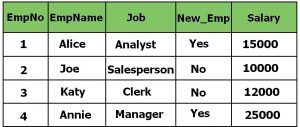
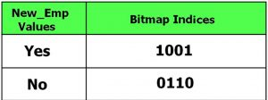
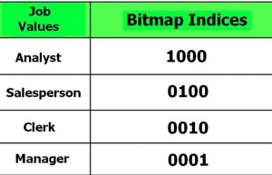
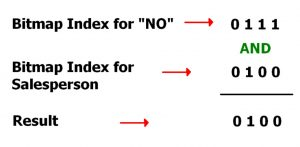

Bitmap Indexing is a special type of database indexing that uses bitmaps. This technique is used for huge databases, when column is of low cardinality and these columns are most frequently used in the query.
Need of Bitmap Indexing –
The need of Bitmap Indexing will be clear through the below given example :
For example, Let us say that a company holds an employee table with entries like EmpNo, EmpName, Job, New_Emp and salary. Let us assume that the employees are hired once in the year, therefore the table will be updated very less and will remain static most of the time. But the columns will be frequently used in queries to retrieve data like : No. of female employees in the company etc. In this case we need a file organization method whch should be fast enough to give quick results. But any of the traditional file organization method is not that fast, therefore we switch to a better method of storing and retrieving data known as Bitmap Indexing.
How Bitmap Indexing is done –
In the above example of table employee, we can see that the column New_Emp has only two values Yes and No based upon the fact that the employee is new to the company or not. Simlarily let us assume that the Job of the Employees is divided into 4 categories only i.e Manager, Analyst, Clerk and Salesman. Such columns are called columns with low cardinality. Even though these columns have less unique values, they can be queried very often.
Bit: Bit is a basic unit of information used in computing that can have only one of two values either 0 or 1 . The two values of a binary digit can also be interpreted as logical values true/false or yes/no.
In Bitmap Indexing these bits are used to represent the unique values in those low cardinality columns. This technique of storing the low cardinality rows in form of bits are called bitmap indices.
Continuing the Employee example, Given below is the Employee table :

If New_Emp is the data to be indexed, the content of the bitmap index is shown as four( As we have four rows in the above table) columns under the heading Bitmap Indices. Here Bitmap Index “Yes” has value 1001 because row 1 and row four has value “Yes” in column New_Emp.

In this case there are two such bitmaps, one for “New_Emp” Yes and one for “New_Emp” NO. It is easy to see that each bit in bitmap indices shows that whether a particular row refer to a person who is New to the company or not.
The above scenario is the simplest form of Bitmap Indexing. Most columns will have more distinct values. For example the column Job here will have only 4 unique values (As mentioned earlier). Variations on the bitmap index can effectively index this data as well. For Job column the bitmap Indexing is shown below:

Now Suppose, If we want to find out the details for the Employee who is not new in the company and is a sales person then we will run the query:
SELECT *
FROM STUDENT
WHERE New_Emp = "No" and Job = "Salesperson";
For this query the DBMS will search the bitmap index of both the columns and perform logical AND operation on those bits and find out the actual result:

Here the result 0100 represents that the second column has to be retrieved as a result.
Bitmap Indexing in SQL – The syntax for creating bitmap index in sql is given below:
CREATE BITMAP INDEX Index_Name
ON Table_Name (Column_Name);
For the above example of employee table, the bitmap index on column New_Emp will be created as follows:
CREATE BITMAP INDEX index_New_Emp
ON Employee (New_Emp);
Advantages –
- Efficiency in terms of insertion deletion and updation
- Faster retrieval of records
Disadvantages –
- Only suitable for large tables
- Bitmap Indexing is time consuming